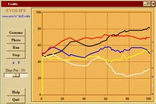

Evolife
Jean-Louis Dessalles

- Overall description
- How to execute Evolife (+ download)
- Evolife source files
- Evolife classes
- Evolife functions
- How Evolife works
- Create your own Evolife scenario
- Use Evolife’s components separately (graphics, ecology, genetic algorithm)
7. Create you own Evolife scenario
Evolife allows you to study an evolving population, either to implement a genetic algorithm or to perform some ecological study. If you do not need all of this, consider
section 8 about using only some of
Evolife’s components.
Evolife scenarios vary:
- by parameters and values defined in the configuration file (xxx.evo) that you load with starter.
- by different default functions implemented in Default_Scenario.py (in Scenarii) that you can redefine.
There are several possibilities to create your own scenario by rewriting functions from Default_Scenario.py:
- Customize an existing scenario by copying and modifying an existing scenario Scenarii/S_xxx.py.
- Alternatively, customize Scenarii/CustomScenario.py. The program imports everything it needs from Evolife, and reads the configuration file MyCustomScenario.evo.
Choose this option only if you need to re-implement one of the classes: Individual, Group, Population, Observer.
Customizing a scenario
You may look in
Scenarii for the scenario that is closest to what you wish to do. Let’s mention:
- S_SumBits.py: a simple genetic algorithm
- S_Labyrinth.py: a genetic algorithm with phenotype
- S_Favourable.py: a simple ecological simulation
- S_Void.py: a void scenario that you can customize
You may cut-and-paste and rewrite all functions inherited from Default_Scenario (defined in Default_Scenario.py). These include:
- – initialization(self): allows to define local variables
- – genemap(self): initialises the genes on the gene map (see Genetic_map.py)
- – phenemap(self): defines a list of phenotypic character names (see Phenotype.py)
- + season(self, year): makes periodic actions like resetting parameters
- + behaviour(self, BestIndiv, AvgIndiv): defines a behaviour to be displayed
- + life_game(self, members): defines a round of interactions – calls the five following functions
- – start_game(self, members): group-level initialization before starting interactions
- – prepare(self, indiv): individual initialization before starting interactions
- – interaction(self, Indiv, Partner): defines a single interaction
- – partner(self, Indiv, members): select a partner among members that will interact with Indiv
- – end_game(self, members): an occasion for a closing round after all interactions
- – evaluation(self, Indiv): defines how the score of an individual is computed
- – lives(self, members): converts scores into life points
- + couples(self, members): returns a list of couples for procreation (individuals may appear in several couples!). Calls the following function):
- – parenthood(self, RankedCandidates, Def_Nb_Children): Determines the number of children depending on rank
- – parents(self, candidates): selects two parents from a list of candidates (candidate = (indiv, NbOfPotentialChildren))
- + new_agent(self, child, parents): initializes newborns
- + remove_agent(self, agent): action to be performed when an agent dies
- + update_positions(self, members, groupID): assigns a position to agents
- * default_view(self): says which windows should be open at start up
- * legends(self): returns a string to be displayed at the bottom ot the Legend window.
- * display_(self): says which statistics are displayed each year
- * Field_grid(self): initial draw in the Field window
- * Trajectory_grid(self): initial draw in the Trajectory window
- * wallpaper(self, Window): if one wants to display different backgrounds in windows
Functions marked with ‘–’ are called from within the scenario.
Functions marked with ‘+’ are called from Group.py.
Functions marked with ‘*’ are called from Observer.py.
You may then run the scenario by choosing MyScenario.evo from the Configuration Editor.
To create a scenario from scratch
- Suppose you want to run a simulation of beehive. Create a new file, e.g. S_Beehive.py (or any appropriate name starting with S_) in the directory Scenarii by copying an existing scenario (pick the one that seems to resemble your own project most closely, e.g. S_SexRatio.py).
- Customize S_Beehive.py by rewriting any functions inherited from Default_Scenario (some have been listed in the preceding section).
- Create a Beehive.evo configuration file at an appropriate location (typically in the Expe directory). This file should include many of the parameter-value pairs that Evolife is looking for, such as PopulationSize or MutationRate.
- You can edit the new parameter-value pairs you introduced in the .evo configuration file using the confituration editor (starter). Your parameters will be merely added at the bottom after you have loaded Beehive.evo. If you want a cleaner aspect, you should edit the appropriate .xml file loaded by starter. Then restart the Configuration Editor by executing ./starter. After setting all relevant parameters to the desired values, you can run Evolife with your scenario by clicking on [Run].
If you REALLY need to re-implement classes such as
Individual,
Group,
Population or
Observer, do the same by rewriting
CustomScenario.